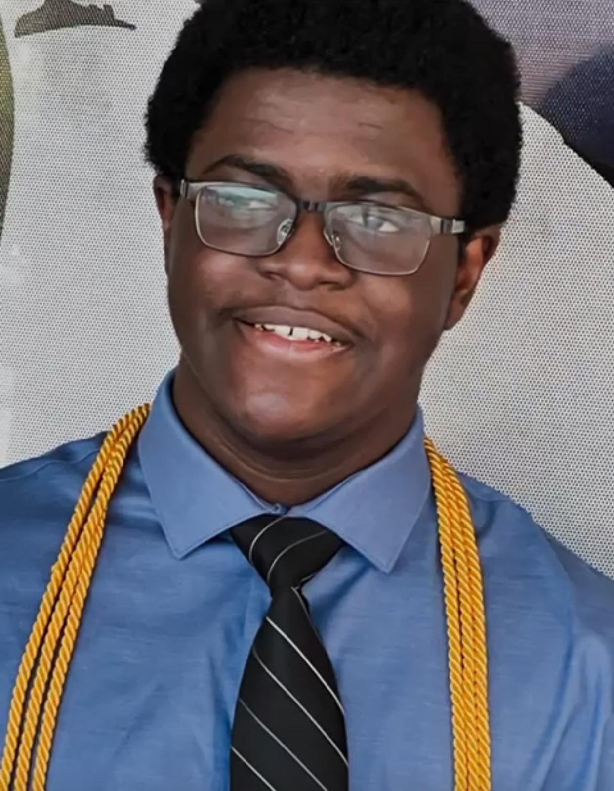

About Me
Hi, I’m Abdussalam Raheem. I’m currently a Computer Science Honors student at Texas A&M University, where I’m maintaining a 3.85 GPA. What excites me most about computer science is the way data can tell stories, uncover hidden patterns, and drive better decisions. For me, technology isn’t just about coding—it’s about solving problems and making an impact. Whether it’s in business, healthcare, or everyday life, I’m always looking for ways to use data and software to make things better.
What I’ve Done
Over the past few years, I’ve been able to work on projects that have pushed me to grow technically and as a teammate. One of my favorite experiences was leading a team in a datathon where we analyzed more than 250,000 transaction records for a local restaurant. We built a dashboard that highlighted trends in customer behavior and created recommendations projected to boost revenue by 12%. That project showed me how powerful data can be when applied to real-world challenges.
I’m also involved in undergraduate research, where I’m using machine learning to predict disease outcomes. I’ve engineered over 140 features to improve accuracy, and it’s given me hands-on experience with modeling and experimentation. Alongside this, I’ve earned certifications in AWS and ServiceNow, which helped me understand how large-scale systems and cloud platforms work in practice.
What I’m Building
Right now, my group and I are developing a college football fantasy app from the ground up. It’s a full-stack project that challenges me to balance backend architecture, database design, and front-end development. It’s been a great way to combine my love for sports with my passion for building useful software.
What I’m Looking For
Looking ahead, I’m excited to keep learning and to apply my skills in professional settings. I’m especially interested in data science, software development, and tech consulting internships where I can work with great teams, contribute to meaningful projects, and continue to grow as a problem solver.

Skills
- Python
- SQL
- Machine Learning
- AWS
- Data Visualization